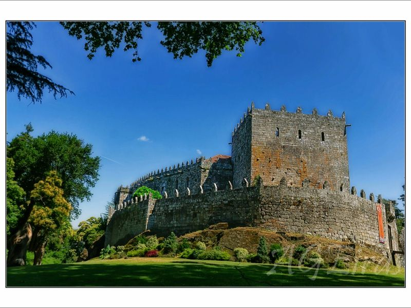
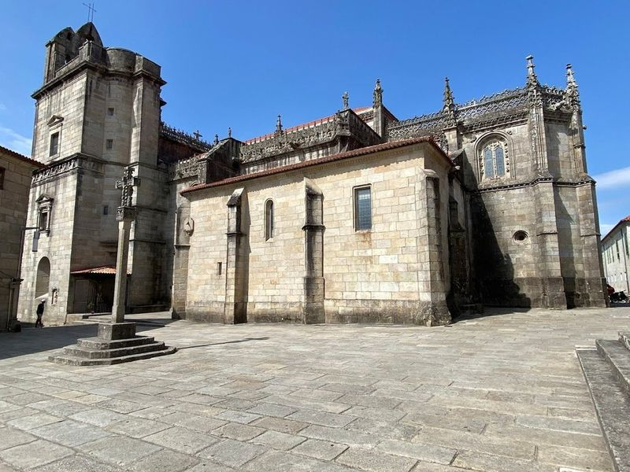
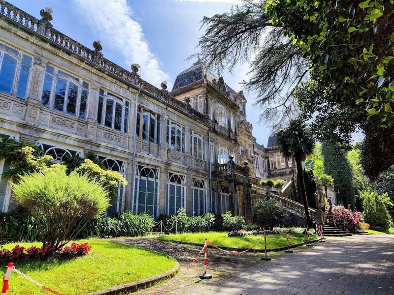
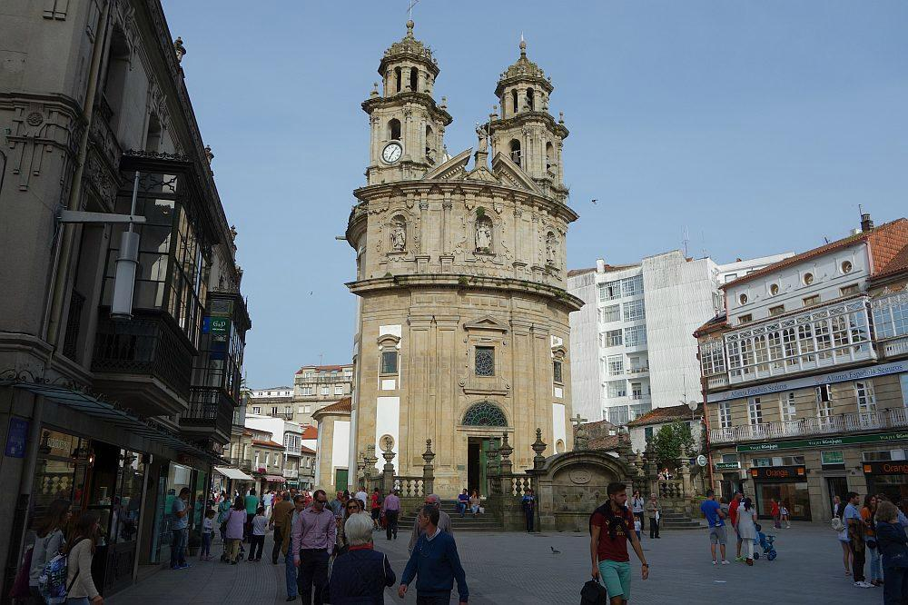
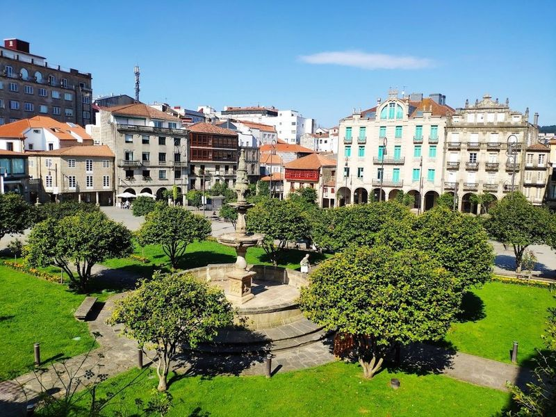
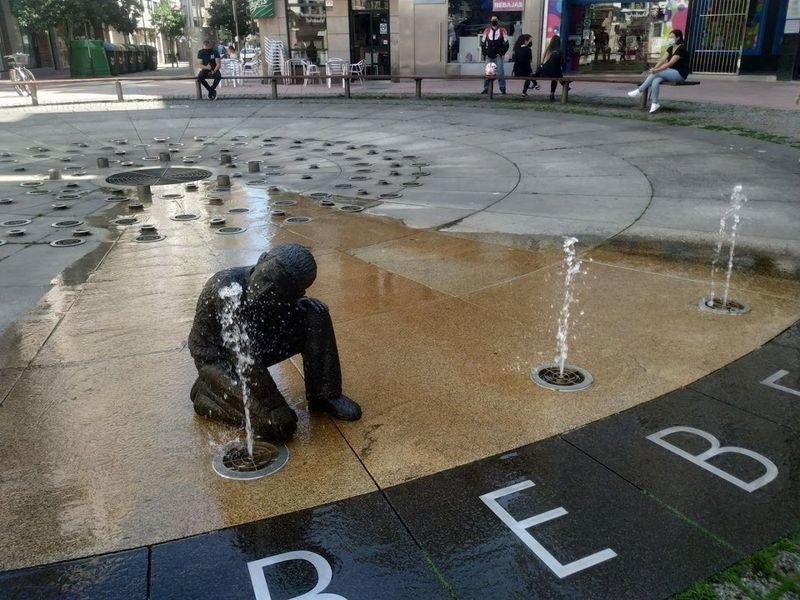
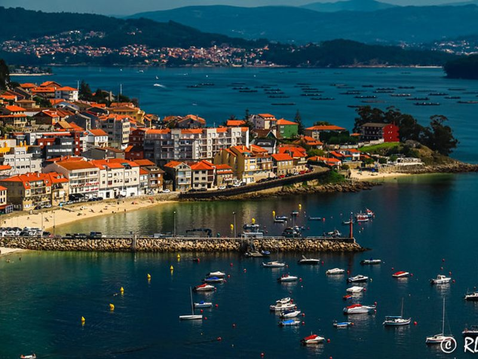
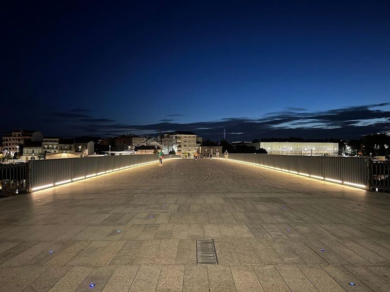
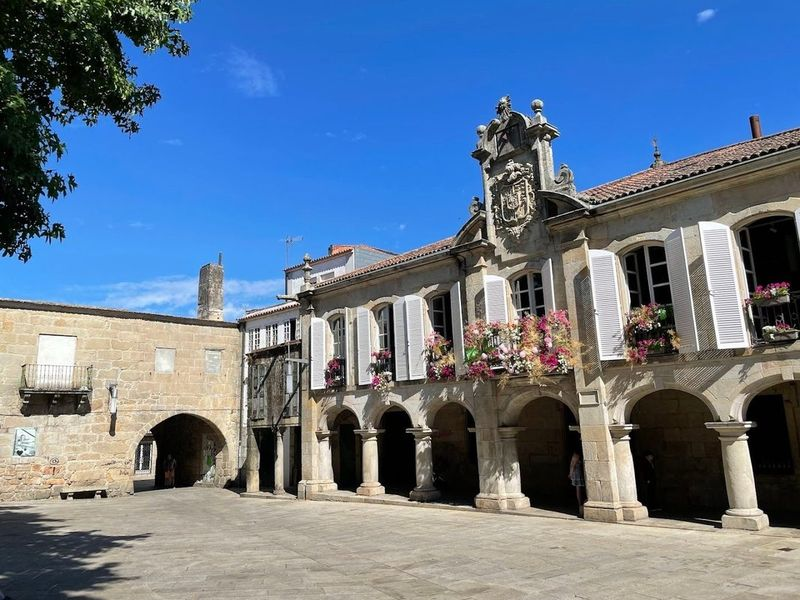
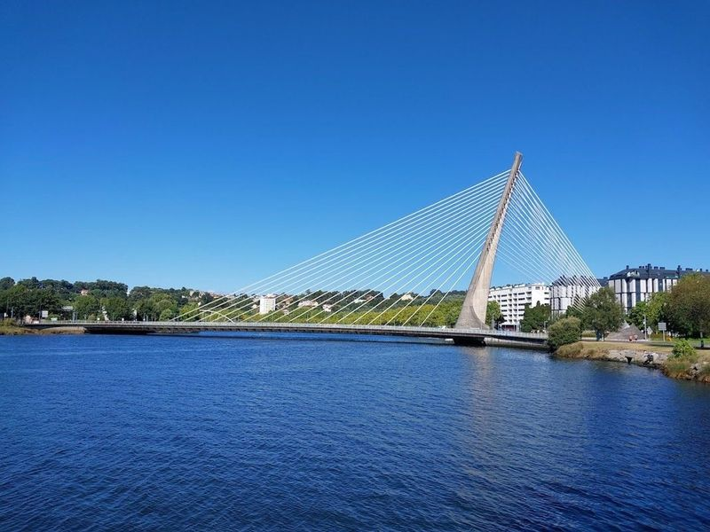

Explore Pontevedra
A Brief History
Pontevedra developed as a Galician port rivalling Vigo until silting shifted trade seaward in the 16th century. Its granite old town preserves arcaded squares, parish churches, and manor houses tied to Atlantic fishing and administration. Urban reforms since the 1990s pedestrianised the centre, making the compact historic core a reference for car-free city planning in northwestern Spain.
Attractions Map
Top Sights & Activities

Soutomaior Castle
Soutomaior Castle is a medieval fortress in the hills above Pontevedra, rebuilt in the 15th century by the Sotomayor family. Towers, a keep, and walled gardens stand among camellia plantings. The site hosts exhibitions on Galician nobility and regional defensive architecture.

Iglesia de Santa María la Mayor
The basilica of Santa María la Mayor dominates Pontevedra's Praza de Alonso de Fonseca with a Plateresque west front added to a Gothic church in the 16th century. Licensed pilgrims on the Portuguese Way pass beneath sculpted fronds and shell motifs. Museum rooms in the cloister display religious art and access a mirador over the old town rooftops.

Pazo de Lourizán
Pazo de Lourizán, with its origins dating back to the 15th century, boasts a dovecote from that era. However, it was during the late 19th century's modernist movement that this architectural gem truly flourished under the expertise of architect Jenaro de la Fuente Dominguez. The expansive grounds offer a serene setting for leisurely strolls and picturesque views.

Capela da Virxe Peregrina
Capela da Virxe Peregrina is an 18th-century chapel on Praza da Peregrina, a landmark on the Portuguese Camino de Santiago through Pontevedra. Its distinctive rounded shell-shaped plan and Baroque façade face the Herrería square. Stained glass, a scallop-shell font, and pilgrim images of the Virgin, Saint James, and Saint Joseph decorate the interior visited by walkers on the route to Santiago.

Praza da Ferraría
Praza da Ferraría is a vibrant square that serves as a delightful hub for both locals and visitors alike. Nestled conveniently across from the convent, this lively spot often comes alive with the sounds of street musicians, making it an ideal place to unwind with a refreshing drink at one of the nearby cafes.

A Fonte Dos Nenos
A Fonte dos Nenos stands in the Glorieta de Compostela on Rúa Peregrina, where bronze figures of children at play surround a low fountain inaugurated in 2002. Periodic ground-level jets make it a popular stop for families walking the Portuguese Way through Pontevedra's pedestrian old town. The sculptural group was restored in 2024 after vandalism to one of the figures.

Mirador A Granxa
Mirador da Granxa is a viewpoint above the Ría de Pontevedra offering wide views over the estuary, bridges, and old town rooftops. The terrace lies on a wooded slope reached by footpaths from the historic centre. Interpretive panels explain the port's geography and maritime trade.

Ponte do Burgo
Ponte do Burgo is a medieval bridge with origins dating back to the 12th century, built on original Roman foundations. It is located on the Caminho Portugues and adorned with scallop shells, symbolizing pilgrimage. This historical bridge crosses the Lerez River and offers a beautiful spot for a pleasant walk, providing an amazing view of the surrounding landscapes. As part of the Portuguese Way, it holds significance for pilgrims passing through.

pazo mugartegui
Pazo Mugartegui, situated in La Pedreira square in Pontevedra, is a example of Baroque architecture. The building has been meticulously restored and now serves as an exhibition and conference center, as well as a concert hall. It also houses the Wine Regulatory Council of the Rias Baixas Denomination of Origin.

Puente de los Tirantes
As you embark on a leisurely stroll towards the roundabout, be greeted by the Puente de los Tirantes, a modern suspension bridge that stands in striking contrast to the historical landmarks surrounding it. This architectural marvel is particularly captivating at night when its unique design is illuminated, creating a mesmerizing sight.